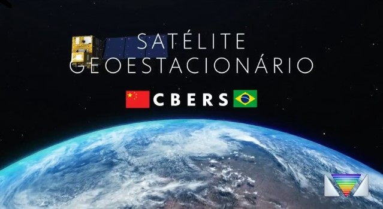
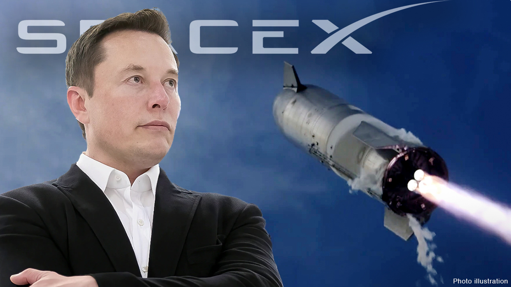

O Brasil está voando alto!
postado 08 de Junho 2024 O diretor do Instituto Nacional de Pesquisas Espaciais (Inpe), Clezio de Nardin, anunciou na manhã desta quinta-feira (6) que o Brasil e a China vão produzir, em cooperação, um satélite meteorológico capaz de prever eventos climáticos extremos.
Leia maisNa quarta tentativa hein, Musk?!
postado 02 de Junho 2024 Esta foi a quarta tentativa da empresa do bilionário Elon Musk de completar uma missão com a nave. Ela será usada em futuras missões da Nasa à Lua e em voos de turismo espacial.
Leia mais